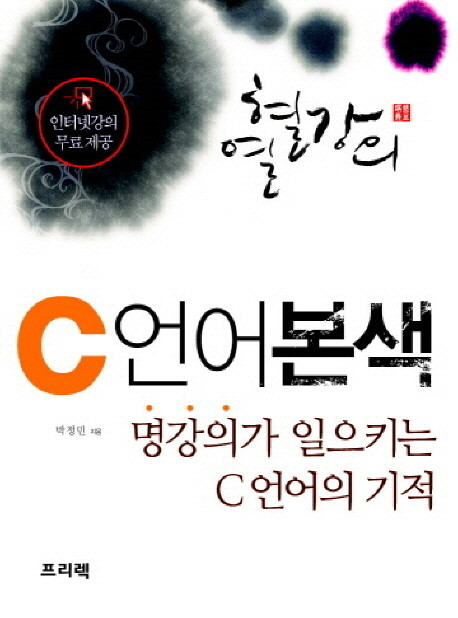
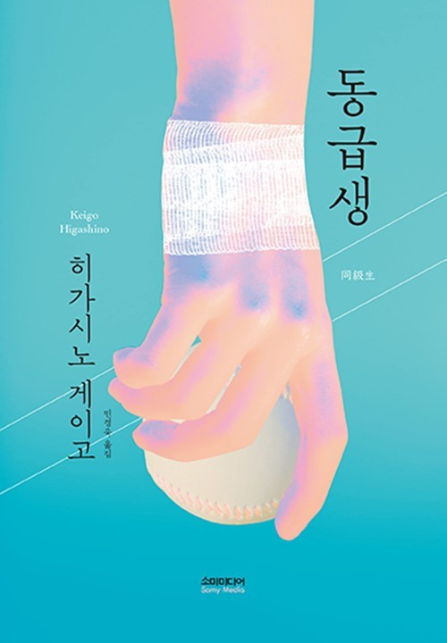
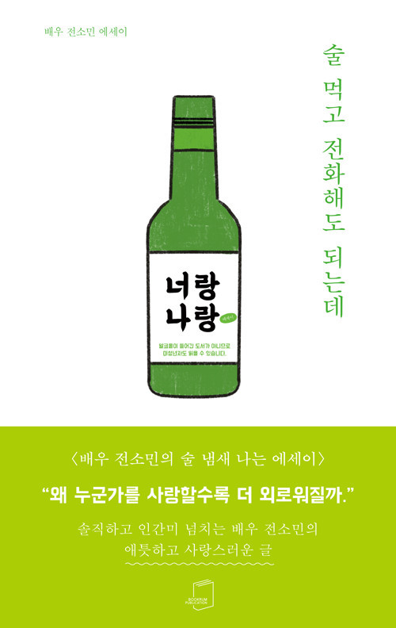

BOOK REVIEW
BOOK REVIEW는 내가 읽어온 책을 소개하는 페이지이다. 소설, 시집, 교양 무엇이든 읽고 업데이트합니다. 책을 즐겨읽는 편은 아니지만 제가 좋아하는 책들을 모아봤습니다. 편안히 읽어주세요! :)
궁금하신 점은 연락처를 통해 연락주세요.
📚📚📚📚📚📚
📚📚📚📚📚📚
BOOK REVIEW는 내가 읽어온 책을 소개하는 페이지이다. 소설, 시집, 교양 무엇이든 읽고 업데이트합니다. 책을 즐겨읽는 편은 아니지만 제가 좋아하는 책들을 모아봤습니다. 편안히 읽어주세요! :)
궁금하신 점은 연락처를 통해 연락주세요.
📚📚📚📚📚📚
📚📚📚📚📚📚

『C 언어 본색』은 C 언어를 처음 배우는 이들에게도 어렵지 않은 예제를 가지고 기본 내용을 설명하고 있는 책이다. 크게 3파트로 구성되어 있으며, PART 1 'C 언어의 기초'에서는 C 언어의 기본적인 내용인 C 프로그램 작성 방법 등에 대하여 다룬다. PART 2 'C 언어의 응용'에서는 1차원, 2차원, 다차원 배열의 주소와 값이 참조 등에 대하여 자세히 설명한다. 끝으로 PART 3 'C 언어의 확장'에서는 구조체와 중첩 구조체, 문자열을 다루는 표준함수와 기타 표준함수 등에 대하여 알려주고 있다.
『나미야 잡화점의 기적』은 추리소설계의 거장 히가시노 게이고의 대표작으로, 오랫동안 아무도 살지 않던 잡화점에 숨어든 삼인조 좀도둑이 과거에서 도착한 고민 상담 편지에 답장을 하면서 일어나는 하룻밤의 기묘한 이야기를 그려낸 소설이다. 치밀한 구성 속에 가슴 뭉클한 반전을 선사하면서 장르와 세대를 아울러 전 세계적으로 큰 사랑을 받았다.

성장소설과 추리소설의 매력을 동시에 담은 히가시노 게이고의 수작. 히가시노 게이고의 데뷔작 《방과 후》에 이은 두 번째 학원 미스터리물 『동급생』. 어느 날 일어난 한 여고생의 교통사고로 인해 촉발된 소동, 그리고 뒤에 벌어진 살인 사건의 범인을 파헤친다.

‘왜 누군가를 사랑할수록 더 외로워질까’ 조금은 비참하거나 애처로운 것도 사랑인걸까. 방송에서 비춰지는 귀여운 사랑꾼 이미지 덕분에 늘 사랑만 받으며 살았을 것 같은 사람, 하지만 ‘진짜’ 전소민은 어떤 사람을 만나 어떻게 사랑했을까. 이 책은 온전히 작가의 이야기가 담겨있다.